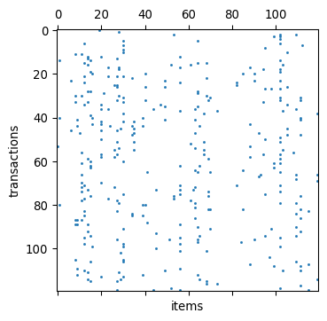
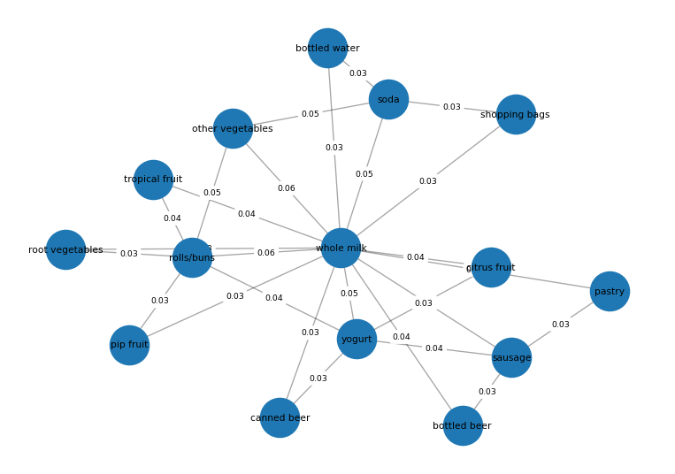

from data.loader import load_groceries
groceries = load_groceries()
type(groceries), groceries.shape(pandas.DataFrame, (14963, 2))Byungkook Oh
2026.09.17
A dataset does not have only one useful representation.
In this lab, we examine how the same underlying data can be represented as records, sequences, matrices, vectors, and graphs.
Before choosing an algorithm, choose a representation.
We use the Groceries transaction dataset to examine how one collection of shopping baskets can be represented in several different ways.
The dataset contains grocery transactions, where each row represents one shopping basket and contains the items purchased together.
Dataset: Groceries on Kaggle. The Kaggle file is one row per item. load_groceries() looks under the repository data/transaction/ folder. If the processed baskets are missing, it downloads the long-format file with kagglehub as groceries_kaggle(raw).csv and groups rows by Member_number and Date into groceries_kaggle.csv.
For market basket analysis, transactions are commonly represented as a binary transaction-item matrix, where 1 means that an item appears in a transaction and 0 means that it does not.
(pandas.DataFrame, (14963, 2))| transaction_id | items | |
|---|---|---|
| 0 | txn_00000 | [tropical fruit, rolls/buns, candy] |
| 1 | txn_00001 | [whole milk, tropical fruit, chocolate] |
| 2 | txn_00002 | [pip fruit, other vegetables, flour] |
| 3 | txn_00003 | [other vegetables, onions, shopping bags] |
| 4 | txn_00004 | [whole milk, other vegetables, white bread] |
Inspect one basket directly.
Think: What is one object in this dataset?
One object is a transaction (basket), represented as a collection of items purchased together.
Unlike record data, transactions do not have a fixed number of attributes. Each basket can contain a different number of items.
txn_00000 -> ['tropical fruit', 'rolls/buns', 'candy']
txn_00001 -> ['whole milk', 'tropical fruit', 'chocolate']
txn_00002 -> ['pip fruit', 'other vegetables', 'flour']Think: How is this different from ordinary record data?
Different transactions can contain different numbers of items, so there is no fixed set of attribute columns in the raw basket representation.
The same baskets can be expanded into a table with one row for each transaction-item occurrence.
(pandas.DataFrame, (38006, 2))| transaction_id | item | |
|---|---|---|
| 0 | txn_00000 | tropical fruit |
| 1 | txn_00000 | rolls/buns |
| 2 | txn_00000 | candy |
| 3 | txn_00001 | whole milk |
| 4 | txn_00001 | tropical fruit |
| 5 | txn_00001 | chocolate |
| 6 | txn_00002 | pip fruit |
| 7 | txn_00002 | other vegetables |
| 8 | txn_00002 | flour |
| 9 | txn_00003 | other vegetables |
| 10 | txn_00003 | onions |
| 11 | txn_00003 | shopping bags |
The same transaction_id now appears repeatedly because one transaction can contain several items.
Think: Did the underlying purchases change?
No. Only the representation changed from one row per basket to one row per transaction-item occurrence.
(scipy.sparse._csr.csr_matrix, (14963, 167))The matrix has the following meaning:
1 if the item is in the transactionView a small part of the matrix using the most frequent items.
| whole milk | other vegetables | rolls/buns | soda | yogurt | root vegetables | tropical fruit | bottled water | sausage | citrus fruit | |
|---|---|---|---|---|---|---|---|---|---|---|
| transaction_id | ||||||||||
| txn_00000 | 0 | 0 | 1 | 0 | 0 | 0 | 1 | 0 | 0 | 0 |
| txn_00001 | 1 | 0 | 0 | 0 | 0 | 0 | 1 | 0 | 0 | 0 |
| txn_00002 | 0 | 1 | 0 | 0 | 0 | 0 | 0 | 0 | 0 | 0 |
| txn_00003 | 0 | 1 | 0 | 0 | 0 | 0 | 0 | 0 | 0 | 0 |
| txn_00004 | 1 | 1 | 0 | 0 | 0 | 0 | 0 | 0 | 0 | 0 |
| txn_00005 | 0 | 0 | 1 | 0 | 0 | 0 | 0 | 0 | 0 | 1 |
| txn_00006 | 0 | 1 | 0 | 0 | 0 | 0 | 0 | 1 | 0 | 0 |
| txn_00007 | 0 | 0 | 0 | 0 | 0 | 0 | 0 | 0 | 0 | 1 |
Now inspect the sparse structure visually.

Think: Why is this matrix sparse?
Each basket contains only a small subset of all available items. Therefore, most transaction-item entries are zero.
Once we have a binary transaction-item matrix, the support of an item becomes a simple summary of how frequently that item appears across transactions.
| item | count | support | |
|---|---|---|---|
| 0 | whole milk | 2363 | 0.157923 |
| 1 | other vegetables | 1827 | 0.122101 |
| 2 | rolls/buns | 1646 | 0.110005 |
| 3 | soda | 1453 | 0.097106 |
| 4 | yogurt | 1285 | 0.085879 |
| 5 | root vegetables | 1041 | 0.069572 |
| 6 | tropical fruit | 1014 | 0.067767 |
| 7 | bottled water | 908 | 0.060683 |
| 8 | sausage | 903 | 0.060349 |
| 9 | citrus fruit | 795 | 0.053131 |
Think: What does a support of 0.10 mean for an item?
It means that the item appears in 10% of all transactions.
This is the same basic notion of support used later in frequent itemset and association-rule mining. In this first lab, we stop at the representation and simple summary rather than running Apriori.
We can also represent items as a graph.
It measures the similarity between two items based on how often they appear together relative to how often either item appears.
A higher value indicates a stronger relationship between two items.
For visualization, we use the most frequent items and connect each item to its strongest co-occurring neighbors.
networkx.classes.graph.GraphInspect the graph before drawing it.
[(0, 1, {'weight': 0.05594758064516129}),
(0, 2, {'weight': 0.055}),
(0, 3, {'weight': 0.047775947281713346}),
(0, 4, {'weight': 0.047974719908072394}),
(0, 5, {'weight': 0.03433606806441811}),
(0, 6, {'weight': 0.03779963122311002}),
(0, 7, {'weight': 0.03381795195954488}),
(0, 8, {'weight': 0.042784163473818644}),
(0, 9, {'weight': 0.035070468698787285}),
(0, 10, {'weight': 0.03190789473684211})]pos = nx.spring_layout(
G_items,
seed=RANDOM_STATE,
k=1.2,
iterations=200,
weight=None,
)
node_labels = {
node: G_items.nodes[node]["item"]
for node in G_items.nodes
}
edge_labels = {
(u, v): f"{data['weight']:.2f}"
for u, v, data in G_items.edges(data=True)
}
plt.figure(figsize=(10, 7))
# Draw edges
nx.draw_networkx_edges(
G_items,
pos,
width=1.0,
alpha=0.35,
)
# Draw nodes
nx.draw_networkx_nodes(
G_items,
pos,
node_size=1100,
)
# Draw node labels
nx.draw_networkx_labels(
G_items,
pos,
labels=node_labels,
font_size=8,
)
# Draw Jaccard similarity on each edge
nx.draw_networkx_edge_labels(
G_items,
pos,
edge_labels=edge_labels,
font_size=7,
rotate=False,
)
plt.axis("off")
plt.show()
Think: Were these item-item edges explicitly stored in the original data?
No. The original data only records which items occurred in each transaction. The item-item graph is a derived representation created by computing item similarity using co-occurrence information and Jaccard similarity.